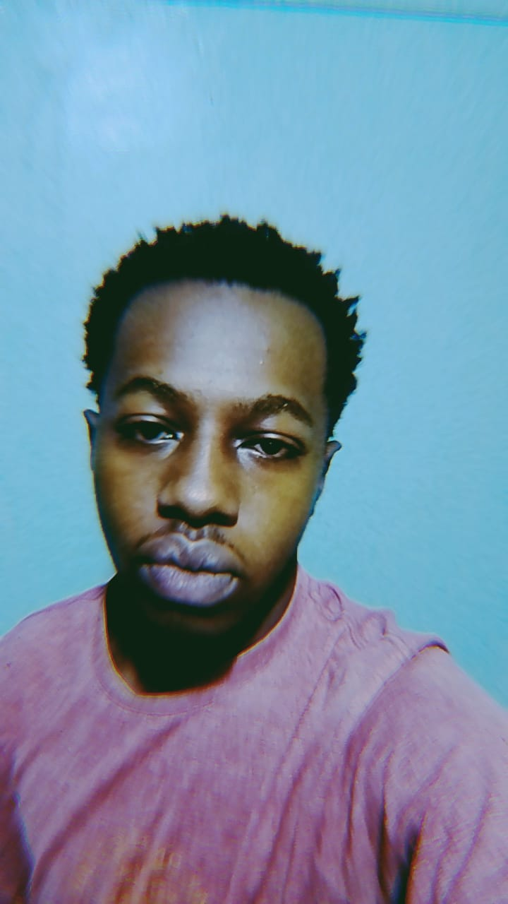

</>Intermediate
HTML
Creating clear, well-structured pages for the web.
IT student & aspiring web developer
I’m Kelvin Karanja, a second-year Information Technology student at Kirinyaga University with a genuine interest in creating for the web.

01 A little about me
I’m a second-year student pursuing a Bachelor of Science in Information Technology at Kirinyaga University. I enjoy learning how technology works and turning new ideas into practical projects.
Web development is where I’m especially keen to grow. I’m building my skills one project at a time, staying curious, and learning from every challenge along the way.
Have an idea or opportunity?What motivates me
“Keep learning. Keep building. Make technology useful.”
A mindset I bring to every project.
02 My toolkit
Creating clear, well-structured pages for the web.
Adding useful interactions and functionality to websites.
Learning the fundamentals and building confidence through practice.
Tools that support my learning and project workflow.
03 Selected work
A couple of projects that reflect what I’m exploring so far.
A project for converting values between number systems, built as a practical exercise in programming and problem-solving.
View on GitHubA web app project focused on creating a form-based experience and practicing the foundations of web development.
View on GitHub04 Education & experience
Education
Kirinyaga University
Second-year studentCommunity
Member, Kirinyaga University
Exploring cybersecurity with fellow students05 Let’s connect
I’m open to connecting with fellow learners, developers, and anyone with an interesting idea to share.
kelvinkaranja8985@gmail.com